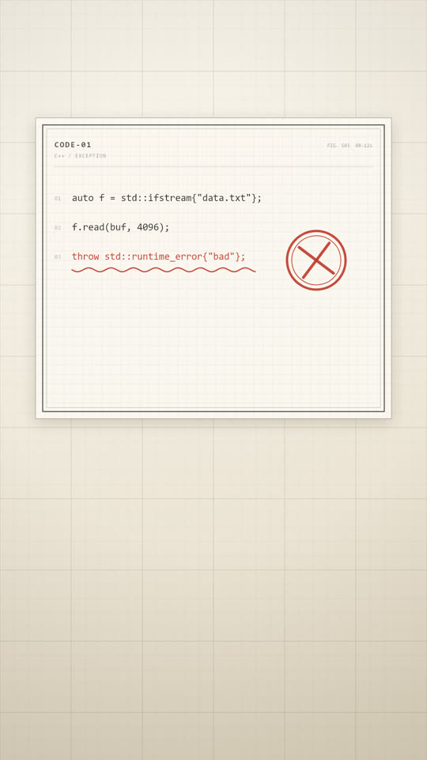

02 · 现役 · 已出货
制图台
冷内容写在暖纸上，批注是人的动作。
- 适合
- 代码、公式、协议、条文这类精确符号系统；需要「严谨、被核对过」的语境
- 别用
- 需要表达动态先后、需要对比、轻松娱乐题材
复制引导块
视觉：工程制图台，暖白纸面。底色 #F4EFE3→#E3D9C4 竖向渐变； 细格 36px 透明度 0.045，粗格 180px 透明度 0.10，墨色 #1B1A17。 线条：主笔 2.5px，辅助结构线 1px，引线 1px 虚线，边框 3px。 强调：朱红 #BE3A2B 只用于批注、否定、盖章，面积不超过画面 3%。 字体：中文标题宋体 600 字重，代码与数值用等宽；字号层级 52/25/20/17/13/11。 语汇：四角定位标记、尺寸线、图号 FIG.、折角、纸屑。不要装饰性插画， 不要光晕，不要科技蓝。质感来自纸与墨，不来自光。